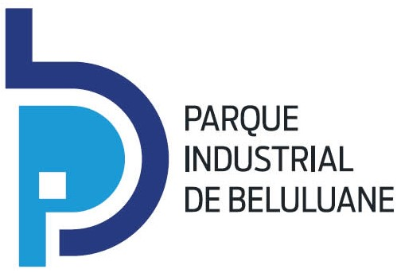

O Parque Industrial de Beluluane e os seus parceiro estão a recrutar Estagiários/as em empresas situadas na
Província de Maputo, para as seguintes vagas:
- Recepcionistas & secretarias;
- Procurement & Logística;
- Contabilistas;
- Marketing & Vendas;
- Higiene e Segurança no trabalho;
- Jurista
Os/as candidatos/as selecionados/as terão a oportunidade de estagiar por um período de 6 meses, com atribuição de um subsídio mensal.
Qualificações
- Nível mínimo: Curso técnico médio concluído na área a que se candidata (excepto a vaga de Jurista, que exige nível de Licenciatura)
Requisitos
- Idade entre 18 e 35 anos;
- Residente na Província de Maputo;
- Certificado de formação;
- Falar e escrever fluentemente Português;
- Trazer soluções para os problemas;
- Inglês nível intermédio;
- Domínio de informática - Microsoft Office.
Habilidades Humana
- Capacidade de comunicar com clareza;
- Capacidade de negociação;
- Capacidade de organização;
- Sentido de responsabilidade;
- Proactiva e eficiente.
-
Encorajamos a candidatura de pessoas com deficiência física
Encorajamos a candidatura de mulheres
VAGA NÃO SE VENDE. ESTA É UMA OPORTUNIDADE GRATUITA PARA MELHORAR AS SUAS COMPETÊNCIAS PROFISSIONAIS
Submeta a sua candidatura até 20 de Janeiro 2020 às 17:00 horas!